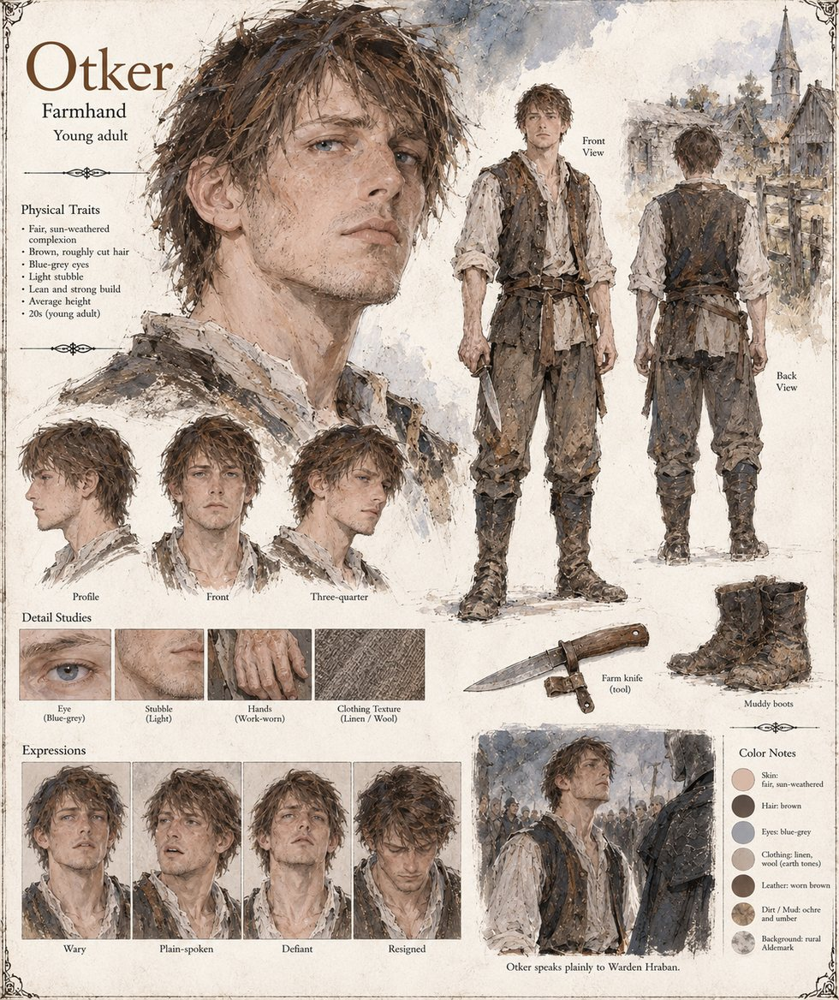

Otker
Farmhand of Halstead · saving barley-money for a daughter's loom · burned in the purge of Halstead, unrecanting · twenties by his sheet
A slow, well-liked farmhand of Halstead who has spent the winter sitting up three nights with a neighbor's failing cow and two seasons of barley-money on a loom for a daughter not yet old enough to weave. By the third week of the dreaming he is the one who reports that if a man goes far enough from the world in his sleep, it stops looking like a floor and starts looking like a stone: round on every side, hanging in the dark with nothing beneath it and nothing propping it up. He is not believed; then he is believed by four people; then by forty. Halstead means the news as an offering, something wonderful to lay at the temple door, and does not yet understand that the temple wants the lie kept whole.
Hraban questions him last and longest, and Otker tells him plainly, the way a man reports weather, that he has seen the shape of the world and would swear to it on his own burial. He goes into the fire on the last day of Brayen without recanting; the Custodians log forty-one dead at Halstead. Years later, at a crossroads, a woman selling eggs asks a former Warden whether it is true that a farmhand named Otker died insisting the world was round, and Hraban answers that it is. The manuscript gives Otker no age; the sheet draws him in his twenties, lean and strong, of average height, with rough-cut brown hair, blue-grey eyes and light stubble, in a linen shirt, a worn leather vest and muddy boots, with a farm knife, and labels his expressions wary, plain-spoken, defiant and resigned.
“I have seen the shape of the world, Warden. It is round. I would swear it on my own burial.”